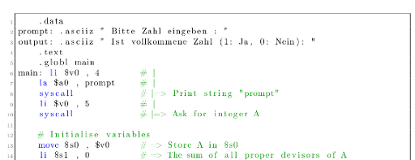

If you like to print highlighted MIPS assembly code in LaTeX, you can use the listings package. Sadly, no MIPS language file exists by default in LaTeX, but awg has created one and provides it on his blog. Just download mips.sty (thanks to Adam Gordon!) and place it in your project folder. Then you can create a project like this:
{kind=link}

\documentclass[a4paper,12pt]{article}
\usepackage{amssymb} % needed for math
\usepackage{amsmath} % needed for math
\usepackage[utf8]{inputenc} % this is needed for german umlauts
\usepackage[ngerman]{babel} % this is needed for german umlauts
\usepackage[T1]{fontenc} % this is needed for correct output of umlauts in pdf
\usepackage[margin=2.5cm]{geometry} %layout
\usepackage{listings} % needed for the inclusion of source code
\usepackage{mips}
% the following is needed for syntax highlighting
\usepackage{color}
\definecolor{dkgreen}{rgb}{0,0.6,0}
\definecolor{gray}{rgb}{0.5,0.5,0.5}
\definecolor{mauve}{rgb}{0.58,0,0.82}
\lstset{ %
language=[mips]Assembler, % the language of the code
basicstyle=\footnotesize, % the size of the fonts that are used for the code
numbers=left, % where to put the line-numbers
numberstyle=\tiny\color{gray}, % the style that is used for the line-numbers
stepnumber=1, % the step between two line-numbers. If it's 1, each line
% will be numbered
numbersep=5pt, % how far the line-numbers are from the code
backgroundcolor=\color{white}, % choose the background color. You must add \usepackage{color}
showspaces=false, % show spaces adding particular underscores
showstringspaces=false, % underline spaces within strings
showtabs=false, % show tabs within strings adding particular underscores
frame=single, % adds a frame around the code
rulecolor=\color{black}, % if not set, the frame-color may be changed on line-breaks within not-black text (e.g. comments (green here))
tabsize=4, % sets default tabsize to 2 spaces
captionpos=b, % sets the caption-position to bottom
breaklines=true, % sets automatic line breaking
breakatwhitespace=false, % sets if automatic breaks should only happen at whitespace
title=\lstname, % show the filename of files included with \lstinputlisting;
% also try caption instead of title
keywordstyle=\color{blue}, % keyword style
commentstyle=\color{dkgreen}, % comment style
stringstyle=\color{mauve}, % string literal style
escapeinside={\%*}{*)}, % if you want to add a comment within your code
morekeywords={*,...} % if you want to add more keywords to the set
}
% this is needed for forms and links within the text
\usepackage{hyperref}
%%%%%%%%%%%%%%%%%%%%%%%%%%%%%%%%%%%%%%%%%%%%%%%%%%%%%%%%%%%%%%%%%%%%%%
% Variablen %
%%%%%%%%%%%%%%%%%%%%%%%%%%%%%%%%%%%%%%%%%%%%%%%%%%%%%%%%%%%%%%%%%%%%%%
\newcommand{\authorName}{Martin Thoma}
\newcommand{\tags}{\authorName, my, tags}
\title{Aufgabe 5}
\author{\authorName}
\date{\today}
%%%%%%%%%%%%%%%%%%%%%%%%%%%%%%%%%%%%%%%%%%%%%%%%%%%%%%%%%%%%%%%%%%%%%%
% PDF Meta information %
%%%%%%%%%%%%%%%%%%%%%%%%%%%%%%%%%%%%%%%%%%%%%%%%%%%%%%%%%%%%%%%%%%%%%%
\hypersetup{
pdfauthor = {\authorName},
pdfkeywords = {\tags},
pdftitle = {This is the title}
}
%%%%%%%%%%%%%%%%%%%%%%%%%%%%%%%%%%%%%%%%%%%%%%%%%%%%%%%%%%%%%%%%%%%%%%
% THE DOCUMENT BEGINS %
%%%%%%%%%%%%%%%%%%%%%%%%%%%%%%%%%%%%%%%%%%%%%%%%%%%%%%%%%%%%%%%%%%%%%%
\begin{document}
\lstinputlisting{aufgabe-5.s}
\end{document}